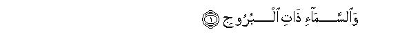

بسم الله الرحمن الرحيم
Sayyid Abul Ala Maududi - Tafhim al-Qur'an - The Meaning of the Qur'an
 85.
Surah Al Burooj (The Constellations)
85.
Surah Al Burooj (The Constellations)
The Surah is so designated after the word al buruj appearing in the first verse.
The subject matter itself indicates that this Surah was sent down at Makkah in the period when persecution of the Muslims was at its climax and the disbelievers of Makkah were trying their utmost by tyranny and coercion to turn away the new converts from Islam.
Its theme is to warn the disbelievers of the evil consequences of the persecution and tyranny that they were perpetrating on the converts to Islam, and to console the believers, so as to say: "If you remain firm and steadfast against tyranny and coercion, you will be rewarded richly for it, and Allah will certainly avenge Himself on your persecutors on your behalf."
In this connection, first of all the story of the people of the ditch (ashab al-ukhdud) had been related, who had burnt the believers to death by casting them into pits full of fire. By means of this story the believers and the disbelievers have been taught a few lessons. First, that just as the people of the ditch became worthy of Allah's curse and punishment, so are the chiefs of Makkah also becoming worthy of it. Second, that just as the believers at that time had willingly accepted to sacrifice their lives by being burnt to death in the pits of fire instead of turning away from the faith, so also the believers now should endure every persecution but should never give up the faith. Third, that Gods acknowledging Whom displeases the disbelievers and is urged on by the believers, is Dominant and Master of the Kingdom of the earth and heavens; He is self-praiseworthy and is watching what the two groups are striving for. Therefore, it is certain that the disbelievers will not only be punished in Hell for their disbelief but, more than that, they too will suffer punishment by fire as a fit recompense for their tyranny and cruelties. Likewise, this also is certain that those, who believe and follow up their belief with good deeds, should go to Paradise and this indeed is the supreme success. Then the disbelievers have been warned, so as to say: "God's grip is very severe. If you are proud of the strength of your hosts, you should know that the hosts of Pharaoh and Thamud were even stronger and more numerous. Therefore, you should learn a lesson from the fate they met. God's power has so encompassed you that you cannot escape His encirclement, and the Qur'an that you are bent upon belying, is unchangeable: it is inscribed in the Preserved Tablet, which cannot be corrupted in any way."

In the name of Allah, the Compassionate, the Merciful.

[1-9] By the heaven with its strong forts,1 and the promised Day,2 and the seer and that which is seen.3 Doomed were the people of the ditch, which had the fire fed by the intensely blazing fuel, when they were sitting by the ditch and witnessing what they were doing with the believers.4 And their enmity against the believers was for no other reason than that they had believed in that Allah Who is the All-Mighty the Self-Praiseworthy, Who is the Owner of the Kingdom of the heavens and the earth: and Allah is watching over everything.5
[10-11] For those who persecuted the believing men and women and did not repent of it, there is the torment of Hell and the punishment of burning.6 As for those who believed and did good deeds, there are Gardens for them beneath which canals will be flowing. This is the supreme success!
[12-22] Indeed, the grip of your Lord is very severe. It is He Who creates in the first instance, and He it is Who will create again. And He is the All-Forgiving, the All-Loving, Owner of the Throne, the Exalted and Doer of whatever He wills.7 Has the story of the hosts reached you, (of the hosts of) Pharaoh and Thamud?8 But those who disbelieve, persist in denying, although Allah has encircled them. (Their denial does not affect the Qur'an at all), for this Qur'an is sublime: it is (inscribed) in the Tablet that is preserved.9
1Literally: "By the heaven having constellations." Some of the commentators have interpreted it to mean the twelve signs of the zodiac in the heavens according to ancient astronomy, However, according to Ibn 'Abbas, Mujahid, Qatadah, Hasan Basri, Dahhak and Suddi it implies the glorious stars and platters of the sky.
2That is, the Day of Resurrection.
3The commentators have expressed many different views about "the seer" and "that which is seen". In our opinion what fits in well with the context is that the seer is every such person who will witness the Day of Resurrection and that which is seen is the Resurrection itself, the dreadful scenes of which will be seen by all This is the view of Mujahid. 'Ikrimah, Dahhak, lbn Nujaih and some other commentators.
4"The people of the ditch": those who had burnt the believers at stake and witnessed their burning themselves. "Doomed were...": cursed were they by God and they became worthy of Hell torment. On this an oath has been sworn by Three things:
(1) By the heaven having constellations,
(2)by the Day of Resurrection, which has been promised, and
(3) by the dreadful scenes of the Day of Resurrection and all those creatures who will witness those scenes.
The first of these testifies to the truth that the Sovereign, Absolute Being Who is ruling over the glorious stars and planets of the universe, cannot allow this contemptible, insignificant creature called man to escape His grip. The second thing has been sworn by on the basis that the wicked people committed whatever tyranny they wanted to commit, but the Day of which men have been fore-warned is sure to come when the grievances of every wronged person will be redressed and every wrongdoer will be brought to book and punished. The third thing has been sworn by for the reason that just as these wicked people enjoyed witnessing the burning of the helpless believers, so will all human beings on the Day of Resurrection witness how they are taken to task and burnt in Hell.
Several events have been mentioned in the traditions of the believers having been thrown into pits of blazing fire, which show that such tyrannies have been inflicted many a time in history.
One of the events has beets reported by Hadrat Suhaib Rumi from the Holy Prophet (upon whom be peace), saying that a king had a magician at his court who cm becoming old requested the king to appoint a boy who should learn magic from him. Accordingly the king appointed a boy. But the boy while going to the magician's place and coming hack home also started visiting on the way a monk (who was probably a follower of the Prophet Jesus) and being influenced by his teaching turned a believer. So much so that by his training he acquired miraculous powers. He would heal the blind and cure the lepers. When the king came to know that the boy had behaved in the Unity of God, he first put the monk to the sword: the+ wanted to kill the boy, but no instrument and no device had any effect on him. At last, the boy said to the king: "If you are bent upon killing me, shoot an arrow at me with the word: Bi-ismi Rahhil-ghulam (in the name of this boy's Lord) in front of the assembled people. and I shall die." The king did as he was told and the boy died. There upon the people cried out that they affirmed faith in the Lord of the boy. The courtiers told the king that the same precisely had happened which Ire wanted to avoid: the people had forsaken his religion and adopted the boy's religion. At this the king was filled with rage. Consequently, hr got pits dug out along the roads, got them tilled with tire and ordered all those who refused to renounce the new faith to he thrown into the tire. (Ahmad, Muslim. Nasa'i, TIrmidhi, Ibn Jarir. 'Abdur Razzaq. Ibn Abi Shaibah, Tabarani. 'Ahd hin Humaid)
The second event has been reported from Hadrat 'Ali. He says that a king of lean drank wine and committed adultery with his sister resulting in illicit relations between the two. When the secret became known, the king got the announcement made that God had permitted marriage with the sister. When the people refused to believe in it, hr started coercing them into accepting by different kinds of punishment; so much so that he began to cast into the pits of fire every such person who refused to concede it. According to Hadrat 'AIi, marriage with the prohibited relations among the fire worshipers has begun since then (Ibn Jarir).
The third event has been related by lbn 'Abbas probably on the hasin of the Israelite traditions, saying that the people of Babylon had compelled the children of Israel to give up the religion of the Prophet Moses (peace he upon himl: so much so that they cast into pits of tire all those who refused to obey. Ibn Jarir, 'Ahd bin Humaid).
The best known event, how ever, relates to Najran. which has been related by Ibn Hisham, Tabari. Ibn Khaldun. the author of Mujam al-Buldan and other Islamic historians. Its resume is as follows: Tuban Asad Abu Karib, king of Himyar (Yaman), went to Yathrib once where he embraced Judaism under the influence of the Jews, and brought two of the Jewish scholars of Bani Quraizah with him to Yaman. There hr propagated Judaism widely. His son Dhu Nuwas succeeded him and hr attacked Najran which was a stronghold of the Christians in southern Arabia so as to eliminate Christianity and make the people accept Judaism. Ibn Hisham says that these people were true followers of the Gospel of the Prophet Jesus) In Najran hr invited the people to accept Judaism but they refused to obey. There upon hr caused a large number of the people to he burnt in the ditches of fire and slew many others with the sword until he had killed nearly twenty thousand of them. Daus Dhu Tha laban an inhabitant of Najran escaped and went. according to one tradition. to the Byzantine emperor, and according to another. to the Negus king of Abyssinia, and told him what had happened
According to the first tradition, the emperor wrote to the king of Abyssinia, and according to the second, the Negus requested the emperor to provide him with a naval force. In any case; an Abyssinian army consisting of seventy thousand soldiers under a general called Aryat, attacked Yaman, Dhu Nuwas was killed, the Jewish rule came to an end, and Yaman become a part of the Christian kingdom of Abyssinia.
The statements of the Islamic historians are not only confirmed by other historical means but they also give many more details. Yaman first came under the Christian Abyssinian domination in 340 A.D. and this domination continued till 378 A.D. The Christian missionaries started entering Yaman in that period. About the same time, a man named Faymiyun (Phemion), who was a righteous, earnest, ascetic man and possessed miraculous powers, arrived in Yaman and by his preaching against idol-worship converted the people of Najran to Christianity. These people were ruled by three chiefs: Sayyid, who was the principal chief like the tribal elders and responsible for external affairs, political agreements and command of the forces, 'Aqib, who looked after the internal affairs and Usquf (Bishop), the religious guide. In southern Arabia Najran commanded great importance, being a major trade and industrial center with tussore, leather and the armament industries. The well-known Yarnanite wrapper and cloak (hulls Yamani) was also manufactured here. On this very basis, Dhu Nuwas attacked this important place not only for religious but also for political and economic reasons. He put to death Harithah (called Arethas by the Syrian historians), Sayyid of Najrain, killed his two daughters in front of his wife Romah and compelled her to drink their blood and then put even her to death. He took out the bones of Bishop Paul from the' grave and burns them, and ordered women, men, children, aged people, priests and monks, all to be thrown into the pits of fire. The total number of the people thus killed has been estimated between twenty and forty thousand. This happened in October, 523 A.D. At last, in 525 A.D. the Abyssinians attacked Yaman and put an end to Dhu Nuwas and his Himyarite kingdom. This is confirmed by the Hisn Ghurab inscription which the modern archaeologists have unearthed in Yaman.
In several Christian writings of the 6th century A.D. details of the event relating to the people of the ditch" have been given, some of which are contemporary and reported from eye-witnesses. Authors of three of these books were contemporaries with the event. They were Procopeus, Cosmos Indicopleustis, who was translating Greek book of Ptolemy under command of the Negus Elesboan at that time and resided at Adolis, a city on the sea-coast of Abyssinia, and Johannes Malala froth whom several of the later historians have related this event. After this, Johannes of Ephesus (d. 585 A.D) has related the story of the persecution of the Christians of Najran in his history of the Church from a letter of Bishop Mar Simeon who was a contemporary reporter of this event. Mar Simeon wrote this letter to Abbot von Gabula; in it Simeon has reported this event with reference to the statements of the Yarnanite eye-witnesses present on the occasion. This letter was published in 1881 A.D from Rome and in 1890 A.D. in the memoirs of the martyrs of Christianity Jacobian Patriarch Dionysius and Zacharia of Mitylene have in their Syriac histories also related this event. Ya`qub Saruji also in his book about the Christians of Najran has made mention of it. Bishop Pulus of Edessa's elegy on those who perished in Najran, is still extant. An English translation of the Syriac kitab al-Himyarin (Book of the Himyarites) was published in 1924 from London, which confirms the statements of the Muslim historians. In the British Museum there are some Abyssinian manuscripts relating to that period or a period close to it, which support this story. Philby in his travelogue entitled "Arabian Highlands", writes: Among the people of Najran the place is still well known where the event of the people of the ditch (ashab al-ukhdud) had taken place. Close by Umm Kharaq there can still be seen some pictures carved in the rocks, and the present day people of Najran also know the place where the cathedral of Najran stood.
The Abyssinian Christians after capturing Najran had built a church here resembling the Ka`bah, by which they wanted to divert pilgrimage from the Ka`bah at Makkah to it. Its priests and keepers wore turbans and regarded it as a sacred sanctuary. The Roman empire also sent monetary aid for this "ka`bah". The priests of this very "Ka`bah" of Najran had visited the Holy Prophet (upon whom be Allah's peace and blessings) under the leadership of their Sayyid, `Aqib and Bishop for a discussion with him and the famous event of the mubahala (trial through prayer) took place as referred to in Al-Imran: 61. (For details. see E.N.'s 29 and 55 of Al-Imran)
5In these verses those of Allah Almighty's attributes have been mentioned on account of which He alone deserves that one should believe in Him, and the people who feel displeased at one's believing in Him, are wicked and unjust.
6"Punishment by burning" has been mentioned separately from the torment of Hell because they had burnt the oppressed people to death by casting them into the pits of fire. Probably this will be a different and severer kind of fire from the fire of Hell in which those people will be burnt.
7"He is All-Forgiving": If a person repents and reforms himself, he can hope to be received by Allah in His mercy. "He is All-Loving", i.e. He has no enmity with His creatures that he would subject them to torment without any reason, but He loves the creatures He has created and punishes them only when they do not give up the attitude of rebellion against Him. "Owner of the Throne" means that He alone is the Ruler of the Kingdom of the Universe: no one who is a rebel can escape His grip and punishment The mention of His being "Exalted" is meant to warn man for his meanness when he adopts an attitude of arrogance against such a Being. Last of all, "He is Doer of whatever He wills": no one in the entire universe has the power to obstruct and resist what Allah wills to do.
8The address is directed to the people who in their false pride of having powerful hosts, are breaking the law of God on His earth. They are being warned. as if to say: "Do you know what evil fate was stet before by those who broke the hounds set by Allah on the strength of the power of their hosts”
9That is, "The writ of the Qur'an is unchangeable and imperishable. It is inscribed in the Preserved Tablet of God. which cannot he corrupted in any way Whatever is written in it, has to be fulfilled: even the whole world together cannot avert its fulfillment.